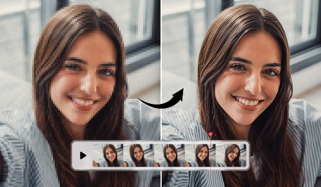
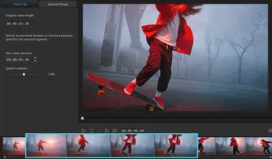

威力导演藏得最深的 4 个狠活，老用户都未必碰过
从 RTX 显卡加速降噪到 Intel 帧插值补帧，再到 2025 年才上线的 TikTok 一键分享——这四个隐藏功能把威力导演的上限直接拉了一截，大多数人用了好几年都没发现。
你以为威力导演官网就是个"能剪能导出"的视频剪辑软件？其实它还藏着一堆只有翻遍菜单、读完全部更新日志才知道的狠活。
我是去年底从官方下载装上它的，一开始就是冲着时间轴剪辑来的——毕竟这是家用级里少有的能跟得上专业工作流的工具。剪着剪着发现不对劲：怎么同样一段素材，在我这台 RTX 4060 上跑降噪比朋友的 RTX 3060 快了整整三倍？问了官方才知道，原来它在 2024 年底偷偷给 NVIDIA 显卡加了硬件加速的降噪链路，而且门槛不高，RTX 2060 及以上就能用。我翻遍了设置面板才找到那个开关——藏得真深。
1. RTX 显卡加速降噪：你显卡的一半算力之前都浪费了
绝大多数人用威力导演的 AI 降噪功能时，默认走的是 CPU 或通用 GPU 路径。但如果你手上有 RTX 2060 及以上的显卡，软件会自动侦测并切换到 Tensor Core 专属的降噪模型——速度直接翻 2 到 4 倍，而且降噪质量比通用模型还略好一点。
开关在哪？选中音频轨上的片段，双击打开音频工具面板，找到「AI 音频降噪」，然后看面板右上角那个小小的齿轮图标——点开之后最下面一行就是「启用 NVIDIA RTX 加速」，默认是关闭的。这就是为什么很多人用了半天降噪还在等进度条慢慢爬，显卡风扇却几乎不转的原因。
这个加速不仅限于音频降噪，视频稳定器和画面增强也能用 RTX 跑推理。在 AI 视频增强面板里，同样的齿轮图标下有个单独的视频加速开关。我用同一段手持 Vlog 素材测了一下，稳定器分析阶段 GPU 利用率从 30% 直接拉到 85%，处理时间从 1 分 20 秒压缩到 22 秒——差距肉眼可见。
什么人用得上？有 RTX 显卡且频繁使用 AI 修复工具的创作者，尤其是 Vlog 博主和教程录制者。什么人可以无视？纯剪辑拼合不加 AI 修复的用户，或者 AMD 显卡持有者（目前只有 NVIDIA 有这套加速链路）。

2. Intel VPL 帧插值：低帧率素材秒变 120fps 慢动作
去年帮朋友剪婚礼录像时遇到过一个头疼的问题：他用手机拍的敬酒环节是 30fps，想做慢动作时一放到 0.3 倍速就卡得像 PPT。我试了各种方案都救不回来，直到翻到powerdirector文档里 2025 更新日志那一节，看到里面提到的"与 Intel 合作的 VPL 帧插值方案"。
帧插值的原理是 AI 在现有帧之间智能生成新帧，把 30fps 的视频补到 60fps 甚至 120fps。但威力导演这版的特别之处在于用了 Intel Video Processing Library——不是那种通用的深度学习模型，而是专门针对视频运动矢量做了优化，在 4K 分辨率下依然能实时预览补帧效果，而且生成的新帧几乎没有拖影伪影。
入口藏在变速控制里。选中片段打开速度面板，拉慢速度到 0.5 倍以下时，面板下方会自动出现一个「AI 帧插值」的勾选项——之前一直没注意到，因为只有在慢放的时候才会冒出来。勾上之后，原来卡顿的 30fps 敬酒片段放到 0.25 倍速依然流畅得不像话，朋友以为我换了专业机器重拍。
这个功能对硬件有要求：Intel 第 12 代及以上 CPU（带 Iris Xe 核显）或者 Arc 独立显卡能跑满实时预览，AMD CPU 也能用但速度会慢一些。有耐心等渲染的话，就算是老 CPU 也能出效果。
3. TikTok 一键分享：2025 年 9 月才上线，现在还没多少人知道
剪完视频之后的分发流程一直是我最头疼的部分——开网页、选文件、等上传、填标题、选封面，一套下来少说十几分钟。威力导演之前已经支持 YouTube 直传，TikTok 一直没有，我以为它永远不会加。
结果 2025 年 9 月它悄摸上线了 TikTok 一键分享。我是在导出面板的一个小角落发现的：点击「分享」按钮，弹出来的平台列表里除了 YouTube、Facebook、Twitter 之外，多了个 TikTok 的图标，而且是排第二的位置。
登录一次之后就能用了。软件会自动侦测你的视频格式——如果是横版 16:9，它还会提示你是否先用智能重构图转成竖版 9:16 再上传，甚至直接在软件内完成重构图和转码。标题、描述、标签都在软件里填完，点击发布就直接送到 TikTok 服务器，中间不用开浏览器。
这个功能在 B 站和抖音教程里几乎没人提，我怀疑是因为它太新，很多人还没升级到 2025 年 Q4 版本。我自己用了两周，上传速度比网页端稳定得多，而且不会出现网页端偶尔要求重新登录的情况。
4. 120/240fps 原生支持：别让高帧率素材白拍了
很多人用手机的 120fps 模式拍素材，但导入威力导演之后发现时间轴上它还是按 30fps 显示，变速效果跟低帧率素材没区别。这不是你拍错了，是威力导演的项目设置默认把高帧率素材降采样了。
正确的做法是：新建项目时，在项目设置面板里把「项目帧率」直接改成 120fps 或 240fps，而不是跟着素材走。这样导入的高帧率素材会以原始帧率进入时间轴，你把它拉到 0.25 倍速时，实际慢放时长是原来的 4 倍，而且每一帧都是真实拍摄的，不是 AI 补出来的。
再配合帧插值功能，就算你只有 60fps 的素材，也能做出媲美专业 240fps 相机的慢动作效果。我现在拍 Vlog 时默认用 120fps，反正手机存储够大，后期想放慢就放慢，想加速就加速，完全灵活。
踩过的几个坑
说了这么多好用的，也得提醒几个藏得深的副作用——这些是我用了大半年才摸透的：
稳定器的裁切代价：视频稳定器是通过画面内侧裁切加位移来实现稳定的，画面边缘一定会被裁掉一点。素材构图太满的时候别拉满稳定强度，不然主体会被挤出画面。我刚用的时候因为不知道这个，把一段拍得很稳的素材强行稳定，结果把人物的头给削了。建议从低强度往上试，预览确认构图没被破坏再敲定。
降噪开过头会有"水下感"：AI 音频降噪和语音增强有个共同的毛病——开太猛的话，人声会变得闷，像在水里说话。修复类工具的黄金法则是"适度"，别一上来就拉满。我现在降噪强度一般设在 60% 到 75% 之间，既能把底噪清干净，又不破坏人声的自然感。最好戴耳机听，别只看波形图。
变速后人声会变调：慢放或快放之后，音频会跟着一起变调。如果需要保留正常音调的人声，就得把音频轨分离出来单独处理，或者用 AI 语音工具重新生成配音。样本里提到的声音克隆就是专门解决这个问题的，克隆自己的声音之后重新录一遍，比现场重拍省事得多。

最后
威力导演的厉害之处不在于它有多少功能——而是它的功能都藏在面板深处，等着人去挖。大多数人用了三年还没碰过 RTX 加速降噪，用了五年还不知道 120fps 项目设置，这不是软件不行，是我们太习惯默认路径了。
我现在用威力导演已经不满足于"能剪就行"的状态了，总想着还有什么角落没摸到。这种感觉挺好的——工具玩透了才叫本事。
至于资料在哪能拿到？GitHub、Gitee、GitCode三个仓库都有完整目录，国内访问选 Gitee 或 GitCode 更顺畅，海外用户直接 GitHub 就行，内容完全同步。